9,500+
Hospital staff outside the insurance desk
Only a hospital's insurance desk could see where a cashless claim stood. Families asked doctors and nurses anyway, and insurers sent medical questions the desk could not answer. IHX Nucleus Mobile put the claim in the hands of the people being asked.
images/nucleus-mobile-hero.webp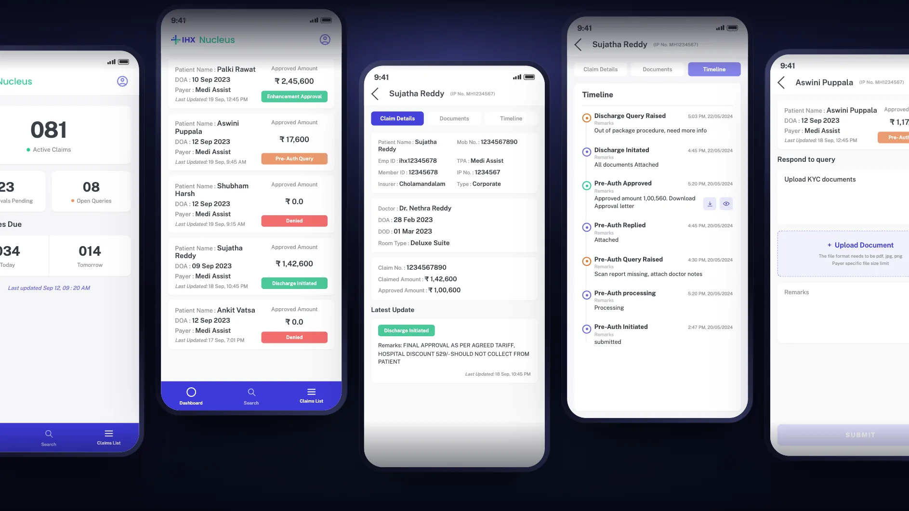
Families chased claim status across the hospital, and insurer queries needed medical answers the insurance desk could not give.
Doctors, head nurses, counsellors and floor staff. They never submit a claim, but they are the ones being asked.
An Android app to see any cashless claim and answer insurer queries from the ward, with access set by role.
9,500+ daily active users. 33% more client acquisition. Designed in 2 days, shipped in 3 weeks.
Claim status was a patient experience problem. The fix was giving the answer to whoever the family asks.
With cashless insurance, the hospital claims the cost from the insurer directly, so the patient does not pay up front. That claim passes through several hands, and the patient's family is watching every step.
The patient needs to be admitted
What it involves, and how much insurance can cover
Asks the insurer to approve the treatment cost
While the insurer reviews, and may raise queries
The final bill goes to the insurer, and the patient waits again
images/nucleus-mobile-journey-map.webp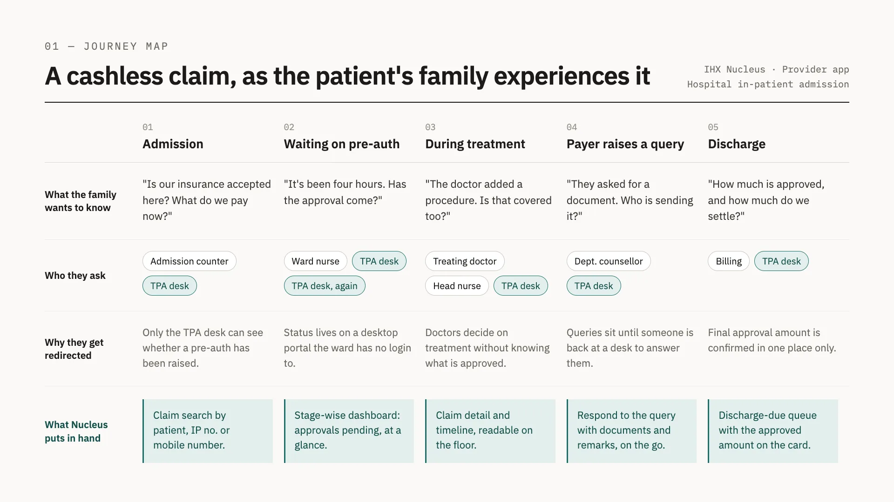
The same stay from the family's side: what they want to know at each step, who they ask, why they get sent on, and what Nucleus puts in staff hands.
Insurance desk (TPA desk): the hospital team that files claims with insurers. Pre-authorization: the insurer's approval of treatment before or during a stay. Query: a question from the insurer that must be answered before a claim moves. TAT: turnaround time, how long an approval takes.
Once a patient is admitted, relatives and bystanders take these questions to the doctor, the head nurse and the insurance desk, which is busy filing claims for other patients. Only the desk can see the answer.
What staff tell a family about the claim status and the approved amount has to be right, and how the hospital handles these conversations shapes its patient experience.
Insurance desk staff are not medically trained, so every clinical query means tracking down a doctor or nurse who can answer it.
Every hour spent chasing raises the turnaround time for approval, and it happens twice: at pre-authorization, and again at discharge.
Enterprise hospitals asked IHX for an app that would put their doctors in the loop: able to tell families where a claim stands, and able to answer insurer queries without walking to the insurance desk.
The people who never file a claim but are asked about every one: the four moments the app had to handle, and the three constraints that shaped every screen.
The nurse opens the claim and answers with its real status and approved amount, instead of sending the family down to the desk.
See the claimThe counsellor checks approvals and co-pays on the claim and helps them plan for any out-of-pocket cost.
See the claimThe clinician sees the query on the claim and replies with documents and remarks from the ward.
Answer the queryThe doctor responds from the app, so the patient is not kept waiting to go home.
Answer the queryHospital staff vary widely in tech literacy and language fluency, and no hospital can train every nurse and doctor. So the home screen is a set of tiles that each answer a question directly: active claims, approvals pending, open queries, and discharges due today and tomorrow. No menus to learn.
Many hospitals have low-network zones inside the building and patchy mobile coverage, and in tier 2 and tier 3 cities connectivity is a real problem. Most staff use low-end smartphones. The UI had to be simple enough to load quickly on all of them. The MVP launched on Android.
Families ask about the claim and the bill, and anything said about insurance has to be exact. Up-to-date claim details, a last updated time on the dashboard, and visibility of every open query let doctors and nurses answer families precisely, and with empathy.
The MVP had to do two jobs well: show a claim, and answer its queries. Everything else stayed on the desktop platform or waited for the next version.
Some staff can only read a claim, others can also answer its queries. Patient data stays with the people who need it.
What needs attention, one number per question.
Any patient's claim, a few taps away.
Deferred; the insurance desk tells staff when a query needs them.
Planned for the next version. It was built on desktop first, as the in-platform chat in QueryLens.AI, and comes to the app next.
Planned for the next version.
Three tabs in the bottom bar, Dashboard, Search and Claims List, and every path ends at a claim.
Username and password
Tiles that answer at a glance
The claims behind the tile tapped
Details, documents, timeline and queries
images/nucleus-mobile-user-flow-v4.webp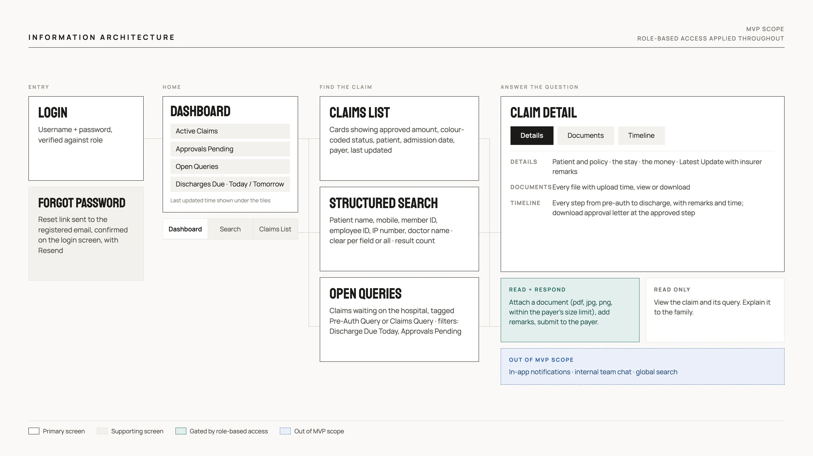
Information architecture of the MVP: login, a dashboard of tiles, three ways to reach a claim (claims list, structured search, open queries) and claim detail, with role-based access deciding who can answer a query.
Each tile answers one question with one number: Active Claims, Approvals Pending, Open Queries and Discharges Due, split into today and tomorrow. Open Queries and Discharges Due put both of the app's jobs on the first screen, and a last updated time under the tiles tells staff how fresh the numbers are before they answer a family. Tapping a tile opens those claims.
images/nucleus-mobile-dashboard-v2.webp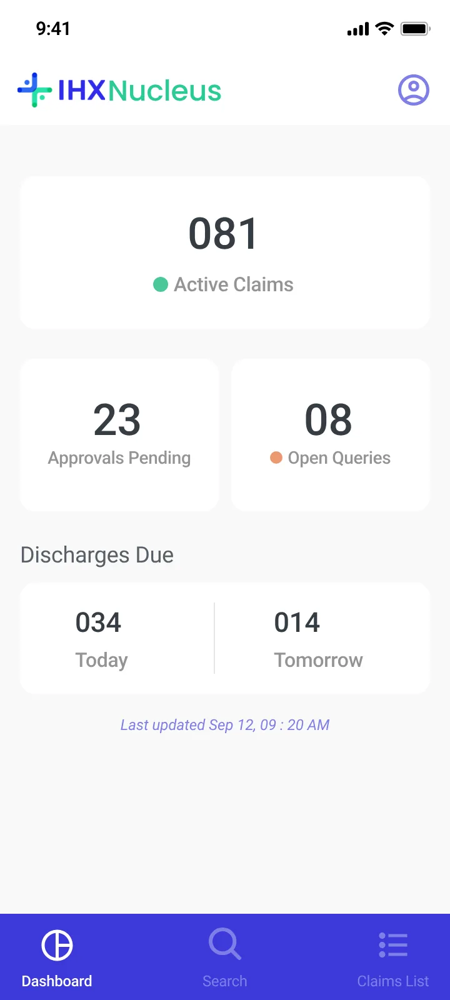
Each card leads with what a relative asks: the approved amount, set large, and a colour-coded status, green for approved, orange for a query, red for denied. Patient name, admission date, payer and last updated sit alongside, so staff can find the right patient and answer without opening the claim.
images/nucleus-mobile-claims-list.webp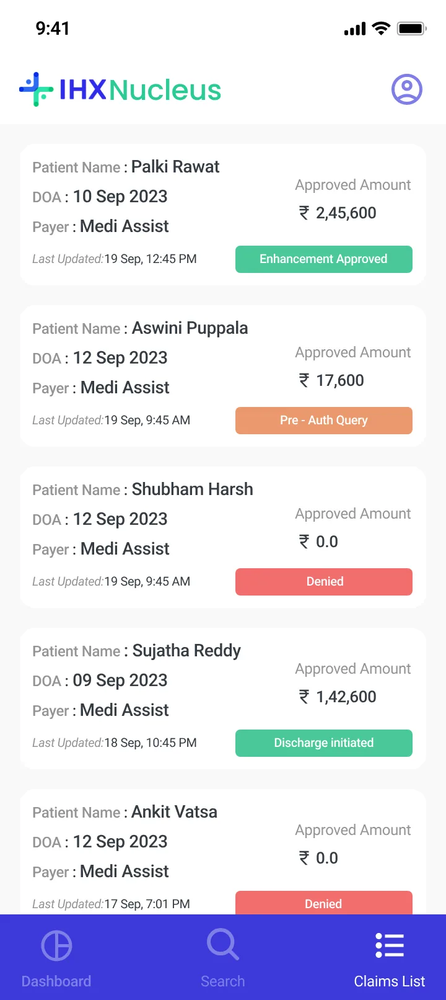
Claim Details groups the facts into three cards: the patient and policy, the stay (doctor, admission, discharge, room type), and the money (claim number, claimed and approved amounts). Below them, Latest Update shows the current status with the insurer's remarks, such as a hospital discount that should not be collected from the patient: exactly what staff need to tell a family. Documents lists every attached file with its upload time, to view or download. Timeline shows the whole stay, from pre-authorization to discharge, each step with its remarks and time. Queries stand out in orange and approvals in green, and an approval letter can be viewed or downloaded right at the step where it was approved, so staff can see a query at discharge as easily as one at admission, and tell a family what happened and when.
images/nucleus-mobile-claim-details.webp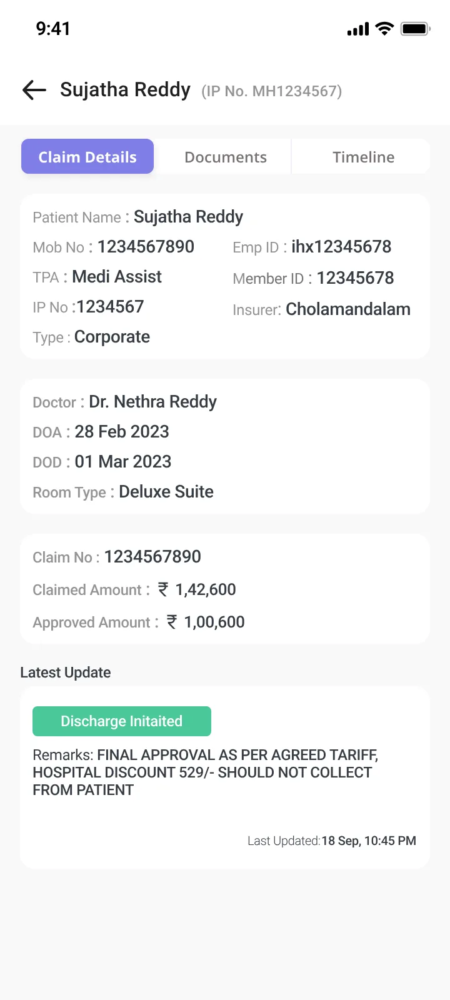
images/nucleus-mobile-documents.webp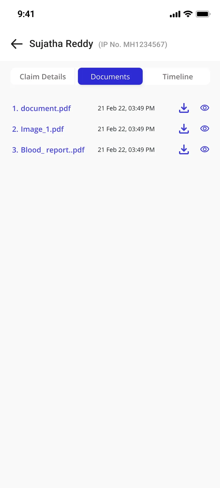
images/nucleus-mobile-timeline.webp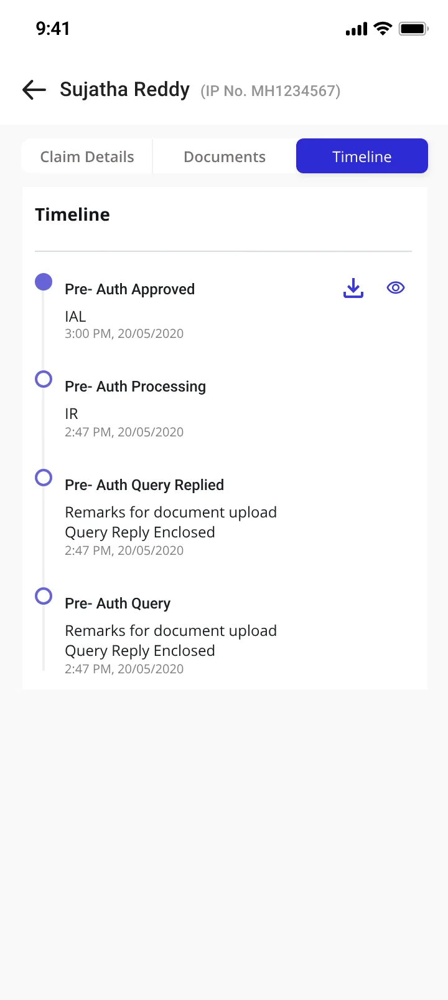
Open Queries lists every claim waiting on the hospital, tagged Pre-Auth Query or Claims Query, with filters for Discharge Due Today and Approvals Pending so the most urgent come first. The response screen keeps the claim summary on top, shows the insurer's query, and asks for only two things: a document (pdf, jpg or png, within the payer's size limit) and remarks. Only staff with respond access can submit.
images/nucleus-mobile-open-queries.webp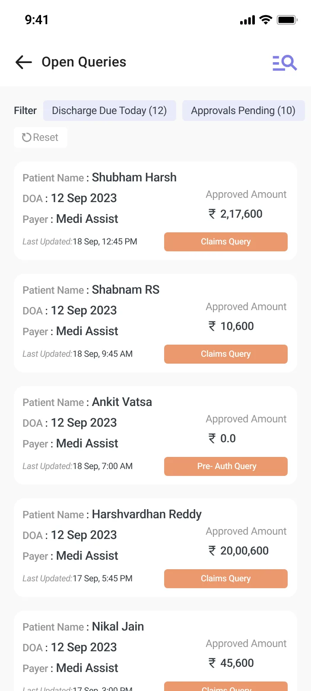
images/nucleus-mobile-query-respond.webp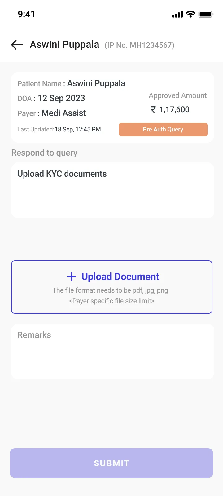
Search is a short form: patient name, mobile number, member ID, employee ID, IP number and doctor name, whichever details a family can give. Each field clears on its own, or all at once, and the results show how many claims matched, each with the patient, doctor, admission date, approved amount and status.
A single global search bar was the goal, and it is planned for the next version. Restrictions on our end at the time meant the MVP shipped this structured search instead.
images/nucleus-mobile-search-v2.webp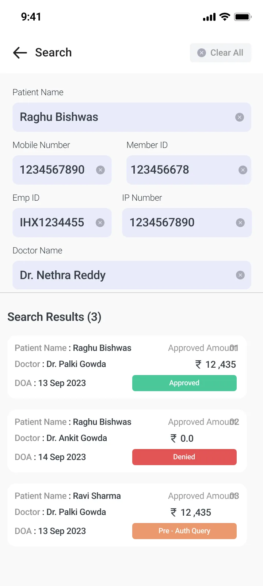
A plain username and password login. Forgot password does not send staff to another page: the login screen itself confirms that a reset link is on its way to the email registered to their login ID, with an option to resend.
images/nucleus-mobile-login.webp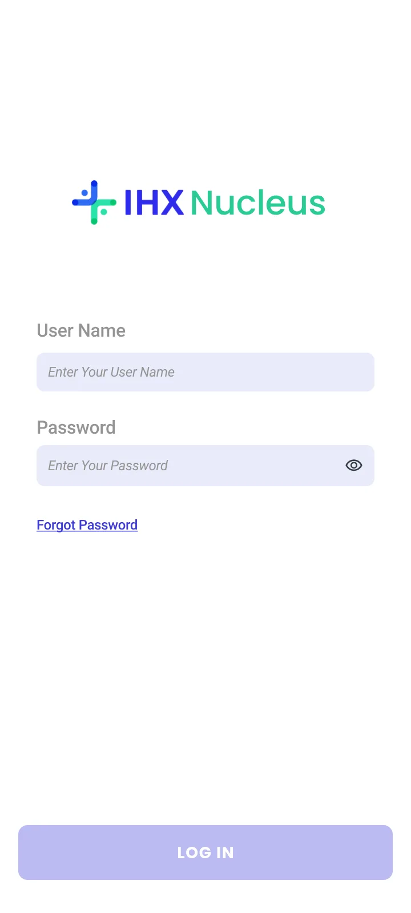
images/nucleus-mobile-forgot-password.webp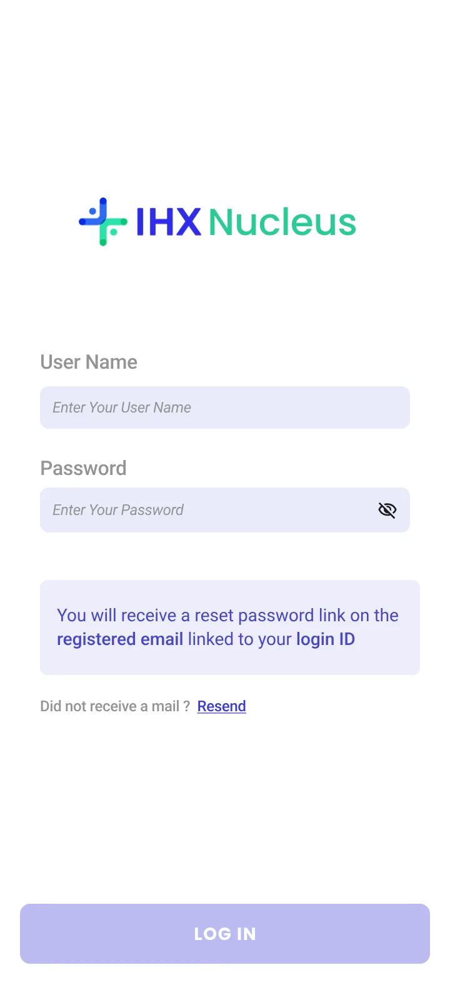
Doctors, head nurses, counsellors, floor staff and hospital management: the people families ask, now able to answer.
The app is live on the Play Store and comes to hospitals as part of the IHX Nucleus Pro contract. Enterprise hospitals specifically want an app that keeps their doctors in the loop, so it helps win new clients and keep existing ones.
Claim status was never only an insurance desk problem. It was a patient experience problem, and the fix was giving the answer to whoever the family asks.
IHX Nucleus Mobile · Android MVP, designed in 2 days, shipped in 3 weeks